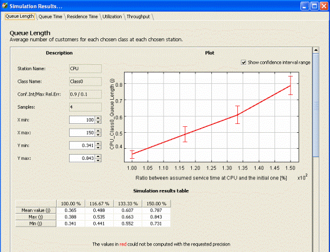
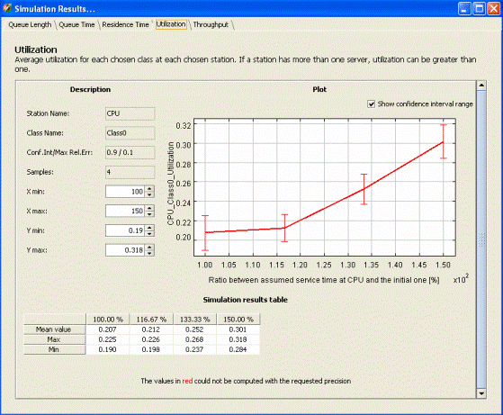

____________________________________________
When the results appear you will see a panel with a number of tabs corresponding to the number of indices you have inserted.
We have chosen as index the Queue length of CPU: this figure shows that the queue length grows with the increasing of the CPU Service Time for the Class0:

This other index, presents the Utilization of CPU for Class0 jobs.
In the first steps of growth, the Utilization is similar to the Utilization when CPU has 100% of Service Time , but in the next steps, the Utilization of CPU grows linearly with the increase of Service Time

See also "how to read simulation results" that include What-if Analysis results.